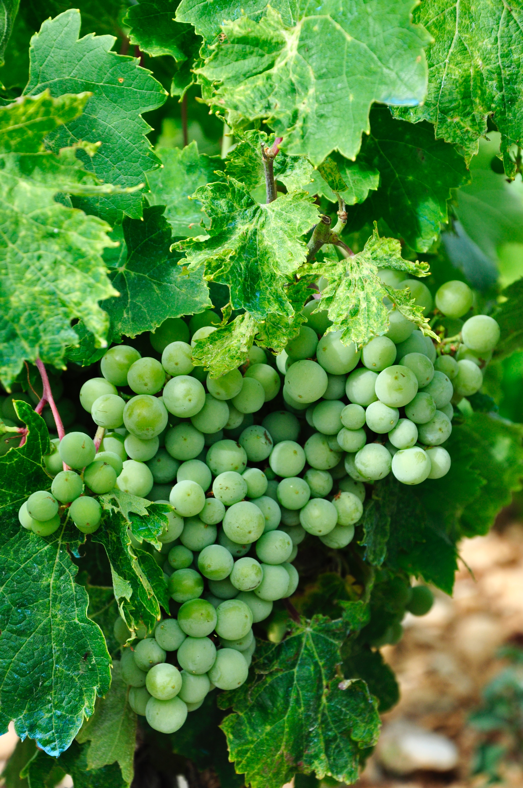

청포도
청포도는 7~8월이 제철이며 구연산과 유기산이 풍부하여 피로회복에 아주 좋답니다.
1. 기본정보
· 구입요령 : 포도송이가 적당하고 알맹이가 균일하게 달린 것이 좋다.
포도송이 끝에 달린 알을 먹었을 때 잘 익은 것이 좋다.
· 유사재료 : 수입산 청포도 (국산 청포도와 비교하여 출하시기가
일정치 않으며 과육이 단단하고 길다.)
· 보관온도 : 1~5℃
· 보관일 : 3일
· 보관법 : 포도를 가장 맛있게 먹을 수 있는 온도는 5~7℃이므로 냉장고에서
꺼내 잠시 두었다가 먹는 것이 좋다.
· 손질법 : 농약을 씻기 위해 미지근한 물에 20~30분간 담가 두었다가 씻어 먹거나
식초를 몇 방울 떨어뜨린 물에 씻어 먹는다.
· 산지특성 및 기타정보 : 일조량이 풍부한 곳에서 생육이 잘된다.
2. 섭취정보
· 섭취방법 : 당도는 높은 편이지만 신맛이 강하게 느껴진다. 과실 살은 유연하고
과즙이 많으며 과실 껍질이 약하기 때문에 구입한 후 바로 먹는 것이 좋다.
· 궁합음식정보 : 해산물 (청포도 특유의 탄닌은 해산물의 비린 맛을 약하게 하여
해산물의 섭취를 쉽게 하여 준다.)
· 다이어트 : 칼로리가 높아 많이 섭취하면 다이어트에 좋지 않아 적당량만 먹는다.
[네이버 지식백과] 청포도 (쿡쿡TV)
